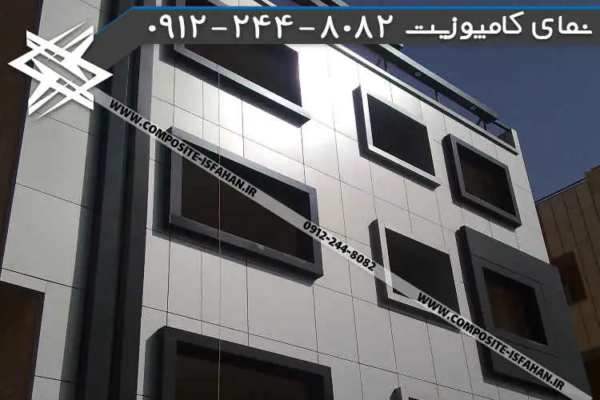

اجرای نمای کامپوزیت در تهران | قیمت هر متر مربع
قبل از هر چیز، اجازه بدهید توضیحات کوتاهی درباره نمای کامپوزیت و اجرای نمای کامپوزیت در تهران و سپس قیمت هر متر مربع این نما را به صورت کلی شرح دهیم. با ما همراه باشید و حرفه ای پیش بروید.
نمای ساختمان از ویژگیهای بسیار مهم یک ساختمان به شمار می رود. به همین خاطر برای ساکنین، مالکین، شهرداری و … اهمیت بسیار زیادی دارد. در حقیقت میتوان گفت که یکی از معیارهای سنجش یک ساختمان، ظاهر آن میباشد.
امروزه طراحان و مجریان نمای ساختمان از روشها و مصالح گوناگونی برای طراحی نمای ساختمان استفاده می کنند. از جمله روش های نوین، می توان به نمای کامپوزیت اشاره نمود.

نمای کامپوزیت ساختمان چیست؟
یکی از مصالح محبوب و مورد استفاده در نمای ساختمان ها، نمای آلومینویم کامپوزیت میباشد که برای اولین بار توسط کشور آلمان ابداع شد و به دلیل ویژگیهای منحصر به فرد، کیفیت بالا و نداشتن محدودیت در طراحی و اجرای آن بسیار مورد توجه قرار گرفت. ورق کامپوزیت از جنس آلومینیوم است که به صورت پنل در ابعاد مشخص تعیین شده توسط طراح نما که به آنها کامپوزیت کار یا نصاب کامپوزیت نیز می گویند اجرا میگردد.
قیمت اجرای هر متر مربع نمای کامپوزیت

مزایا و معایب نمای کامپوزیت
از مزایای آن می توان به موارد زیر اشاره نمود
-
دسترسی آسان
-
هزینه مقرون به صرفه آن
-
اجرای سریع
-
قابل استفاده در مکان های گوناگون
-
دارای پوشش و تنوع رنگهای خاص
-
شکل پذیری بسیار بالا
-
مقاوم در برابر آب و هوای بد
-
وزن سازه بسیار سبک
-
مقاوم در برابر زلزله
-
نوع ضد حریق، مقاوم در برابر آتش سوزی است
-
این ورق عایق صوتی نیز می باشد
-
قابل جابهجایی و تعویض به راحتی
-
قابل شستشو
و از معایب آن می توان به موارد زیر اشاره کرد، البته معایب مربوط به خطاهای انسانی در این زمینه می باشد.
-
استفاده از محصولات بی کیفیت
-
اجرای نامناسب برخی افراد غیر متخصص
-
بکارگیری غلط نوع ورق در یک نمای داخلی یا خارجی
با وجود اینکه در بازار کشور محصولاتی با کیفیت مناسب و استاندارد و همچنین گروه های متخصص برای اجرای این نما هم اتفاقا وجود دارد، انتظار می رود به خصوص در بحث اجرای ورق افراد متبحر و کاردان صرفا به اجرای این محصول بپردازند و افراد غیر متخصص از لطمه زدن به این صنعت نوپا دست بکشند.
هم چنین کارفرمایان محترم پس از تحقیق و اطمینان به کیفیت ورق و اجرا اقدام به نماسازی نمایند و این امر مهم را تنها از شرکت های معتبر بخواهند. حتما قبل از هر اقدامی خوب درباره نوع ورق تحقیق کنید.

اجرای نمای کامپوزیت در تهران
مانند دیگر شهرها، در شهر تهران نیز برای بازسازی نمای ساختمان های مختلف از جمله اداری تجاری و مجتمع ها برج ها تابلو مغازه ها تالار ها جایگاه سوخت پمپ بنزین و گاز و… به وفور از ورق کامپوزیت جهت نماسازی استفاده شده است.تیم های متخصص این شرکت نیز متشکل از افراد کاربلد خبره و با رزومه دو دهه تجربه، در خدمت کارفیان و پیمانکاران در تهران می باشند.
ما در این تارنما سعی کردیم تعدادی از نمونهکارهای مختلف را در دستهبندی های مربوطه قرار دهیم تا بازدیدکنندگان برخی از پروژه هایی اجرایی این شرکت را مشاهده نمایند. پایبند بودن به اصول کار فنی و رعایت موارد ایمنی جزئی از قوانین اجرایی نصاب های ما است. این شرکت همچنین فروشنده انحصاری ورق کامپوزیت نیووال در تهران است. پروژه نمای کامپوزیت مجتمع فردوس غرب در تهران از این ورق مرغوب استفاده شده است.

نصاب کامپوزیت در تهران
نصب نمای کامپوزیت به 4 روش فرم اچ ال، فیکس، هنگ، کلیپس توسط گروه فنی اجرایی انجام می شود.
در حین اجرای نمای کامپوزیت، چند بخش کار وجود دارد که افراد گروه فنی در غالب گروه هر کدام وظیفه ای را انجام می دهند.
گروه اول در حال انجام اقدامات اولیه بر روی پروفیل ها (مانند رنگ ضد زنگ زدن برش پروفیل ) هستند و پس از پایان، جوشگار ها وارد عمل می شوند و زیرسازی را طبق طرح سه بعدی نمای کامپوزیت پیش می برند.
گروه بعدی نیز شروع به برش و خم ورق ها در اندازه مشخص شده روی میز کار می کنند و پس از آماده سازی ورق، آن را تحویل نصاب نمای کامپوزیت می دهند تا پانل را روی نما نصب کند.

قیمت هر متر مربع نمای کامپوزیت در تهران
قیمت ورق کامپوزیت تحت تاثیر چند عامل مانند تاریخ تولید ورق و مشخصات آن است و قیمت هر متر مربع نمای کامپوزیت به عواملی مثل روش اجرا و نوع طرح و اندازه های ورق می باشد که با توجه به میزان پرتی و کوچک و بزرگ بودن ابعاد ورق ها قیمت تمام شده هر متر مربع متغییر شایانی می کند.

اگر درباره نمای ترموود علاقمند هستنید اطلاعات مفیدی رو در این مقاله بدست خواهید اورد.